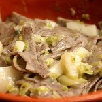
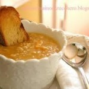
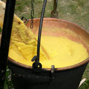
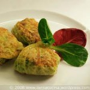
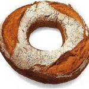

Val Poschiavo
La Valle Poschiavo, situata all’interno del Canton Grigioni, è interamente percorsa dal Bernina Express, dichiarato Patrimonio dell’Umanità.
La Val Poschiavo (in tedesco: Puschlav) è la valle più meridionale delle 150 valli del Cantone dei Griogioni, si estende per 25 km, delimitata a nord dal Passo del Bernina e, a sud dal confine italiano, con la città italiana di Tirano. Più precisamente, la Valle di Poschiavo, situata nell’attuale Svizzera italiana, a sud del Passo del Bernina, collega l’Engadina con la Valtellina.

PRODOTTI TIPICI
Da sempre collegamento tra nord e sud, la Valle fu conquistata dai Romani, prima, dai Longobardi dopo, e successivamente durante tutto il corso della storia fu contesa fino a quando a inizio del 1800 si unì allo Stato delle Tre Leghe e conseguentemente alla Confederazione Svizzera.
A partire dal XVII secolo si assistette ad un importante fenomeno di emigrazione, verso la vicina Serenissima Repubblica di Venezia mentre durante il XIX secolo le vie dell’emigrazione si spostarono verso nuovi poli, in particolare Spagna, Francia e Inghilterra, ma anche verso la Russia dove in molte città sorgono caffè gestiti da emigranti poschiavini. Il ritorno di capitali verso la Valle consentì di decorare Poschiavo di stupendi palazzi patrizi, tra cui la magnifica Via dei Palazzi, posta a sud del paese. La seconda grande ondata migratoria agli inizi del ‘900 dovuta alla crescita della popolazione si diresse per lo più verso le Americhe e l’Australia.
Contemporaneamente tra il 1842 e il 1865 venne costruita la carrozzabile del Bernina e la ferrovia del Bernina Express, che diedero nuovo vigore all’economia locale ed impulso al turismo.
Percorrendo la valle con il Bernina Express è possibile ammirare i più svariati paesaggi della Svizzera, partendo dalle vigne della Valtellina fino alle vette di ghiaccio del Monte Bernina … il viaggio in treno da St. Moritz a Poschiavo e fino al confine italiano a Tirano è un’esperienza impressionante. La vallata alpestre affascina immediatamente con le sue caratteristiche ambientali tipiche, la sua natura intatta, le sue numerose attrattive storico-architettoniche … le vedute del ghiacciaio del Morteratsch, Diavolezza o Lagalb, la vista che si gode da Alp Grüm dell’imponente ghiacciaio del Palü e il Lago di Poschiavo in fondo alla valle. La linea ferroviaria del Bernina Express in Val Poschiavo con una pendenza del 70 per mille è il collegamento che corre più in alto attraverso le Alpi ed è la linea più ripida a scartamento ridotto, senza eguali nel mondo.
Accanto a siti di incomparabile bellezza naturale, si posizionano comuni con interessanti monumenti culturali, chiese e palazzi.
Il comune centrale è Poschiavo, che assieme a Brusio, formano il distretto Bernina. Altre città e borghi interessanti sono Campocologno, Campascio, Miralago, La Rasiga, Zalende, Viano, Cavaglia, Prada, San Carlo, Privilasco, Li Curt, Sfazù, Mureda , Muottas Muragl, Cologna, Pedecosta, Celerina.
Tutta la val Poschiavo è ricca di acque, oltre ad essere percorsa dal fiume Poschiavino, sono presenti un numero elevato di laghi, tra cui il Lago Bianco, il Lago Nero, il Lago Braita, il Lago Campascio, il Lago Crocetta, il Lago Dügural, il Lago Matt, il Lago Roan, il Lago di Saoseo, il Lago Teo e il Lago di Val Viola.
L’incomparabile mosaico di bellezze naturali, specificità linguistiche, culturali, sociali, architettoniche e geografiche rappresentano una grande ricchezza che si manifesta anche nella generosa ospitalità, nella genuinità dei prodotti biologici, nella raffinatezza dei manufatti artigianali, nell’autenticità di un’offerta turistica alternativa.
PIATTI TIPICI
|  | Pizzöcar ala pusc’ciavina (Pizzoccheri alla poschiavina) |
|  | Minestra da dumega (Minestra di orzo) |
|  | Pulenta in flur (Polenta alla panna)Pulenta taragna (Polenta con formaggio) |
|  | Capunet (Gnocchetti di spinaci) |
|  | Brasciadela (Ciambella di pane di Poschiavo con anice) |